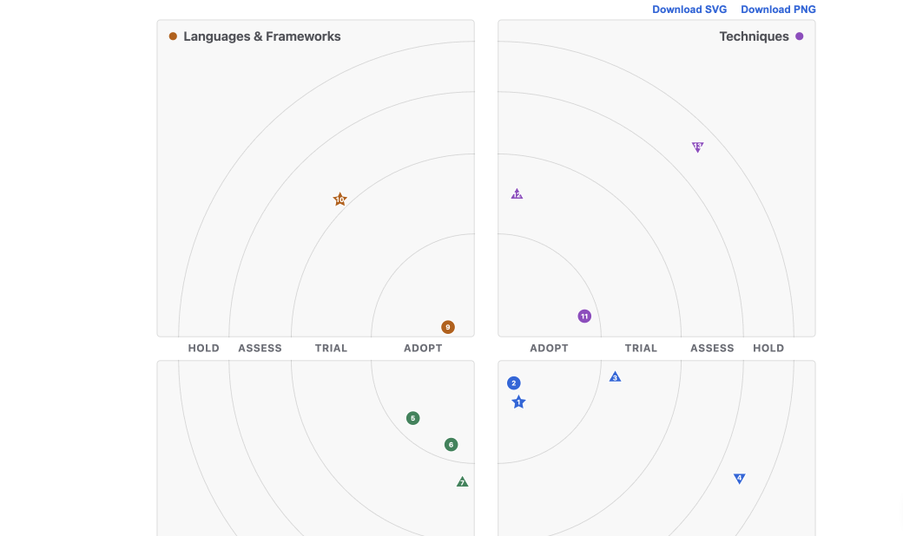
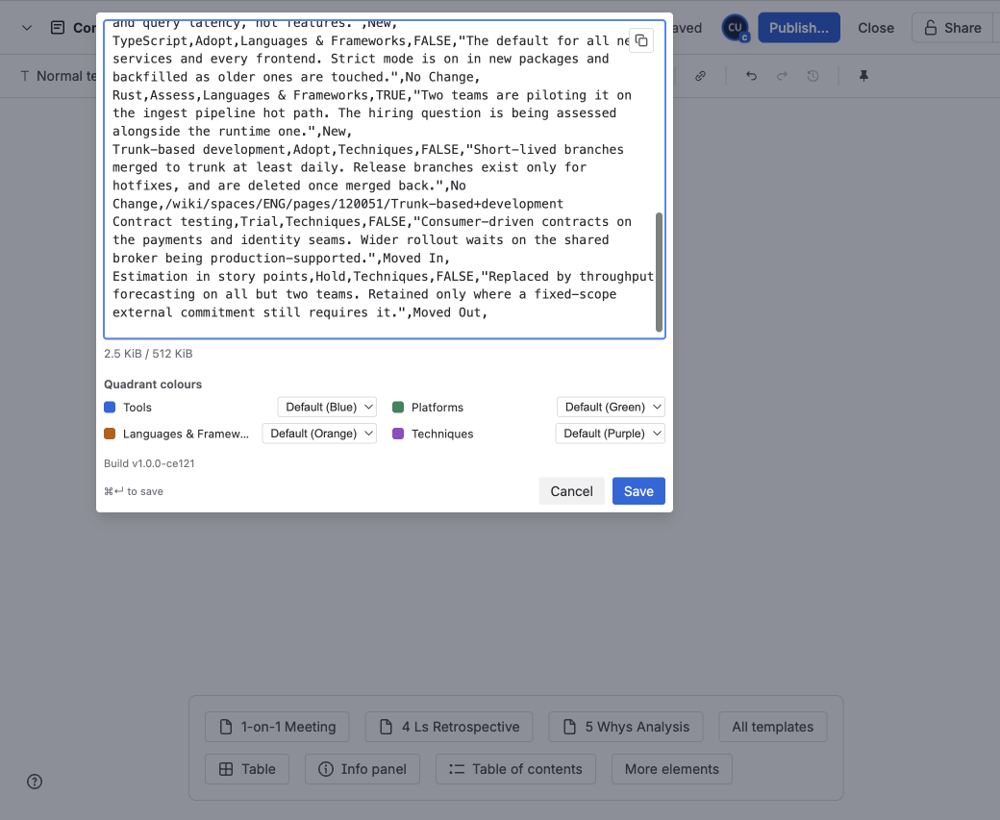
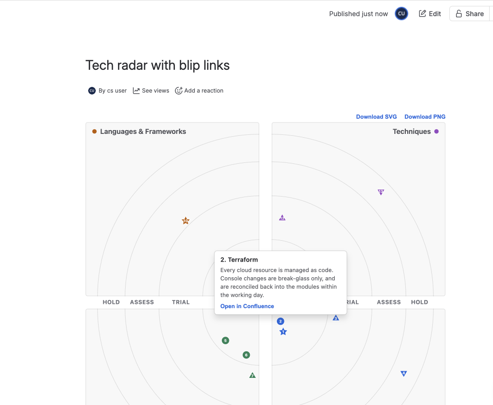
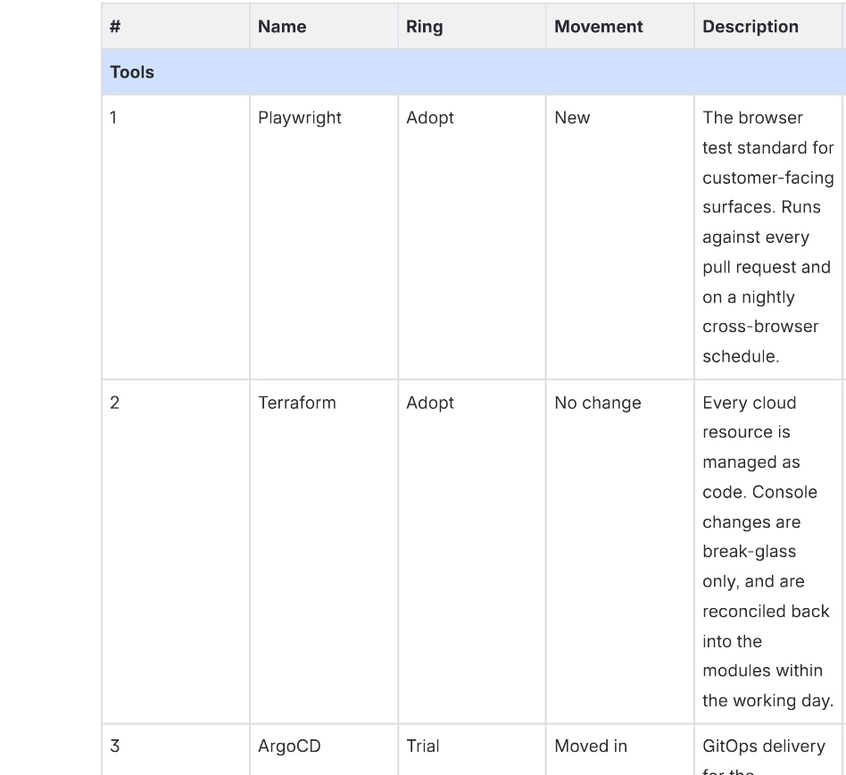

<div class="page wrap">
  <div class="prose">
    <style>
      .prose figure.shot { margin: 1.6rem 0; }
      .prose figure.shot img { width: 100%; display: block; border: 1px solid #E4EAF1; border-radius: 12px; background: #FFFFFF; }
      .prose figure.shot figcaption { font-size: 0.85rem; color: #5C6B7E; margin-top: 0.5rem; text-align: center; }
    </style>
    <h1>Tech Adoption Radar for Confluence</h1>
    <div class="trust-badges">
      <a class="trust-badge" href="/trust#badges">
        <svg width="14" height="14" viewBox="0 0 24 24" fill="none" stroke="currentColor" stroke-width="2" stroke-linecap="round" stroke-linejoin="round" aria-hidden="true"><path d="M12 3 2 8l10 5 10-5-10-5Z"/><path d="M2 12l10 5 10-5"/><path d="M2 16l10 5 10-5"/></svg>Runs on Atlassian
      </a>
    </div>

    <p class="lede">Tech Adoption Radar for Confluence is a Confluence Cloud app, built on Atlassian Forge, that renders a technology adoption radar (the four-quadrant, four-ring chart) from a CSV or JSON blip list pasted into a macro. The page holds the list as text and the chart is drawn in the reader's browser when the page is viewed, so an edit to the list is what the next viewer sees, and the change is visible in page history like any other page edit.</p>

    <p>Engineering organisations that maintain a tech radar usually publish it outside the wiki their teams read: a hosted radar site, a static-site build, or a screenshot pasted into a page and replaced by hand. This macro renders the radar from the blip list itself, in the Confluence page. It accepts the two common blip-list formats, the BYOR-convention CSV and the radar.js JSON dialect, so a team already maintaining a radar file in either format can paste it unchanged; the parser renders every blip it can place and lists anything it could not.</p>

    <p>The blip list is stored in the macro on your own Confluence page and is never sent to Cloudscript.io or any third party; the app requests no Confluence permissions (<code>scopes: []</code>), declares no external network destinations, and keeps no store of its own. Because the chart is drawn in the browser on the live page, a page exported to PDF or Word cannot include it; the export carries a structured table of the blips instead, and an image of the chart is available from the page's Download SVG and Download PNG buttons. The macro renders the list pasted into it: it does not fetch or synchronise a blip list from a URL, a spreadsheet, or any other external source.</p>

    <p class="cta-row">
      <a class="btn btn-primary" href="https://marketplace.atlassian.com/apps/2543668212/tech-adoption-radar-for-confluence" target="_blank" rel="noopener">View on Marketplace</a>
    </p>

    <figure class="shot">
      
      <figcaption>The sample blip list rendered as a quadrant radar on a Confluence page.</figcaption>
    </figure>

    <h2>Adding a radar</h2>
    <p>Edit a Confluence page and insert the <strong>Cloudscript Radar</strong> macro, either by typing <code>/radar</code> in the editor or by choosing it from the macro browser. (The macro is listed as Cloudscript Radar in the editor; under an administrator's Manage apps it appears by its full name, Tech Adoption Radar for Confluence.) Open the macro's configuration panel, paste your blip list, then save the macro and publish the page. The chart renders when the page is viewed. Each macro holds and renders one blip list. To place several radars in a space, one per team or domain, add a separate macro for each.</p>

    <h2>The configuration editor</h2>
    <p>The configuration panel is a single plain-text editor titled <strong>Radar blip list source</strong>, with the hint "Paste your CSV or JSON blip list here…". A meter beneath the editor tracks the source size against the 512 KiB cap; while the source is over the cap, saving is disabled. From an empty editor you can load a sample blip list, a fictional 13-blip engineering radar that renders without edits and gives you a working file to adapt. Save with the Save button or Cmd/Ctrl+Enter; Escape cancels.</p>

    <figure class="shot">
      
      <figcaption>The configuration editor: the blip-list source, the size meter, and the four quadrant-colour selectors.</figcaption>
    </figure>

    <h2>Quadrant colours</h2>
    <p>Beneath the editor, a <strong>Quadrant colours</strong> panel offers one selector per quadrant, labelled with the quadrant names parsed from your draft. Each selector chooses among ten Atlassian accent hues (Blue, Teal, Green, Lime, Yellow, Orange, Red, Magenta, Purple, Gray) or the quadrant's default; the defaults are blue, green, orange and purple in quadrant order. There is no free colour input. Selections are stored with the macro, follow Confluence's light and dark themes, and also tint the quadrant rows of the PDF and Word export table.</p>

    <h2>Accepted formats</h2>
    <p>The macro reads the body as JSON first and falls back to CSV; a stored format override can pin either dialect. Input recognised as neither shows a message naming both formats.</p>
    <p><strong>CSV (BYOR convention).</strong> A header row of <code>name, ring, quadrant, isNew, description</code>, matched in any letter case, with optional <code>status</code> and <code>link</code> columns. Rings are Adopt, Trial, Assess and Hold, with Caution accepted for Hold. Quadrant names come from the data: the first four distinct quadrant values name the radar's quadrants. <code>isNew</code> TRUE marks a blip as new, and a <code>status</code> value (New, Moved In, Moved Out, No Change) overrides it.</p>
    <p><strong>JSON (radar.js dialect).</strong> An array of <code>{quadrant, ring, label, moved, link}</code> entries, bare or wrapped in a config object with an <code>entries</code> array. Quadrants are numbered clockwise from bottom-right and rings inside-out, per the dialect; <code>moved</code> values -1, 0, 1 and 2 map to moved out, unchanged, moved in and new. Ring names, quadrant names and the radar's title are read from the config object when present.</p>
    <p>A list that violates its own convention still renders: every placeable blip is drawn, and a collapsed note beneath the chart ("2 notes about this blip list") lists each row or entry the parser could not honour, with the reason, such as an unknown ring value or an empty name. Two blips with the same name render as separate numbered entries. Both formats are published by open-source radar projects; Tech Adoption Radar for Confluence is an independent product and is not affiliated with or endorsed by the projects that publish them.</p>

    <h2>What renders</h2>
    <p>The chart is a four-quadrant, four-ring SVG radar laid out as four quadrant cards separated by gutters, with the ring names set in the horizontal gutter. Blip colour encodes quadrant, radial position encodes ring, and marker shape encodes movement: a circle for no change, an up triangle for moved in, a down triangle for moved out and a star for new, explained by a static key row beneath the chart. A numbered legend groups every blip by quadrant, then ring, and each legend number matches the number on the corresponding marker. The output is vector graphics (SVG), so it scales cleanly at any zoom.</p>
    <p>Placement is deterministic: blips are numbered by quadrant, ring and name, and identical input always produces an identical chart with identical numbering. Moving one technology from Trial to Adopt therefore shows in page history as exactly that edit, and two renders of the same list are pixel-identical.</p>
    <p>Hovering a blip (or tapping it, on touch) opens a card with the blip's number, name, movement and description; Escape or tapping elsewhere dismisses it.</p>

    <h2>Blip links</h2>
    <p>A <code>link</code> column (CSV) or <code>link</code> field (JSON) may carry a same-site Confluence path, such as <code>/wiki/spaces/ENG/pages/98311/Terraform</code>. A linked blip's hover card gains an <strong>Open in Confluence</strong> button, clicking the blip itself opens the target in a new tab, and linked blips are keyboard-reachable (focus shows the card; Enter or Space opens the link).</p>
    <p>A link must be a relative path starting with a single <code>/</code>. External URLs, and any value carrying a scheme, are kept in the stored source but assign no behaviour anywhere: the blip renders and exports without a link. When a draft contains such values, saving first shows a warning titled "External links are not displayed." listing the affected rows, with Continue (save unchanged) and Cancel (return to editing).</p>

    <figure class="shot">
      
      <figcaption>A linked blip's hover card, with the Open in Confluence button.</figcaption>
    </figure>

    <h2>Downloading an image of the radar</h2>
    <p>Above the chart, <strong>Download SVG</strong> and <strong>Download PNG</strong> buttons produce an image of the rendered radar, composed entirely in the browser with no network request. The SVG is self-contained, with styles inlined and the movement key and caption included; the PNG is rasterised at twice the chart's pixel dimensions. The filename is the radar's title as a slug (<code>migration-radar.svg</code> for a source titled "Migration Radar"), or <code>tech-adoption-radar</code> when the source carries no title. The buttons appear only when a chart is rendered.</p>

    <h2>Page exports (PDF and Word)</h2>
    <p>Confluence's PDF and Word exports cannot run the live macro, so the export emits a structured fallback: a caption, then one table of every blip grouped by quadrant and ring, with columns #, Name, Ring, Movement, Description and Link. Each quadrant's section row is tinted with that quadrant's configured colour, and movement appears as text (New, Moved in, Moved out, No change). Accepted blip links are written out as absolute URLs whose visible text is the URL itself, so they survive print; when the export carries no usable site address, the path appears as plain text instead. Every cell is neutralised against spreadsheet formula injection: a cell beginning with <code>=</code>, <code>+</code>, <code>-</code> or <code>@</code> is prefixed so pasting the table into a spreadsheet executes nothing.</p>
    <p>When the stored source cannot be parsed, the export carries the source itself in a code block under the caption "Radar blip list source — rendered on the live page". A macro with no source configured exports a line saying so instead of an empty block.</p>

    <figure class="shot">
      
      <figcaption>The PDF and Word export fallback: a structured table by quadrant and ring, with tinted quadrant rows and movement as text.</figcaption>
    </figure>

    <h2>Known limitations</h2>
    <p><strong>Page exports carry a table, not the chart.</strong> Because the chart is drawn in the browser on the live page, a page exported to PDF or Word cannot display it; the export carries the structured blip table described above. An image of the chart comes from the on-page Download SVG and Download PNG buttons, and pasting one into a page or document is a manual step.</p>
    <p><strong>The blip list is pasted text.</strong> The macro renders what is stored in it. It does not ingest a list from a URL, a spreadsheet service, or a repository, and it does not poll anything: updating the radar means editing the macro's source. There is no authoring workflow beyond the plain-text editor.</p>
    <p><strong>Links are same-site only.</strong> Only relative Confluence paths starting with a single <code>/</code> become live links; external URLs are preserved in the source but carry no behaviour on the page or in exports.</p>
    <p><strong>Source size is capped at 512 KiB.</strong> The editor disables saving over the cap, and a stored over-cap source shows a card naming the size and the limit in place of the chart, so an oversized list cannot affect the host page.</p>
    <p><strong>Very large lists degrade by design.</strong> The chart places at most 691 blips. A larger list renders a card giving the blip count and a per-quadrant breakdown instead of an unreadable chart, and suggests splitting the list across pages. Within a normal-sized list, a blip whose ring segment is too crowded to place without overlap stays in the legend, with a note naming it.</p>

    <h3>Error messages</h3>
    <p>When the macro cannot draw a chart, it shows a card on the page naming what happened:</p>
    <ul>
      <li><strong>Empty.</strong> "No radar blip list yet." invites you to edit the macro and paste a list; the editor offers the sample.</li>
      <li><strong>Unreadable.</strong> "This blip list couldn't be read." with a hint naming both accepted formats and their required shapes.</li>
      <li><strong>Partly readable.</strong> The chart renders, and the collapsed notes beneath it list each unplaceable row or entry with the reason.</li>
      <li><strong>Over the size cap.</strong> "This blip list exceeds the size limit." with the source's size and the 512 KiB limit.</li>
      <li><strong>Too many blips.</strong> A card naming the count, the 691-blip cap, and the list's per-quadrant breakdown.</li>
      <li><strong>Internal error.</strong> "The renderer hit an unexpected problem." with the underlying message.</li>
    </ul>
    <p>Error cards carry the rendering engine's version in a small footer (for the current version, "Engine: cloudscript-radar 0.1.0"); quote it if you contact support.</p>

    <h2>Licensing</h2>
    <p>The app is licensed per site through the Atlassian Marketplace, and a trial licence behaves identically to an active one on every surface. While a site's licence is inactive, each surface shows a notice titled "An active licence is required." naming the app as an administrator sees it under Manage apps: the page shows the notice in place of the chart, inserting a new macro shows it in place of the editor, and a PDF or Word export carries it in place of the table. Opening an existing macro's editor shows the notice above the stored source, which stays visible, selectable and copyable byte-for-byte via a copy button, so the blip list remains portable while the licence is inactive. As the notice itself states: "The stored blip list source is unchanged and remains available from the macro editor."</p>

    <h2>Security and privacy</h2>
    <p>The macro runs as a Custom UI app inside its own sandboxed iframe: the blip list is parsed and the chart drawn in the viewer's browser, and no blip data is sent to Cloudscript.io or any third party. The app requests no Confluence permissions (the manifest declares <code>scopes: []</code>), declares no external network destinations, keeps no storage of its own, and runs no analytics. The blip list, the optional format override and the colour selections are stored as the macro's parameters inside your own Confluence page content, governed by ordinary page permissions, page history and Confluence's own data lifecycle.</p>
    <p>Two narrow server-side reads exist, both within Atlassian's infrastructure. At export, a stateless Forge function reads the pasted source from the export payload for the single purpose of writing the fallback table; it stores nothing, and logs nothing beyond the structural shape of the payload when a source cannot be found. The licence check reads the licence state Atlassian supplies to the app's own runtime context; it is a local read, with no network call and no scopes.</p>
    <p>The full detail is in the app's <a href="/apps/radar-renderer/privacy">Privacy Policy</a>, and our broader approach is described in the <a href="/security">Security Policy</a> and <a href="/trust">Trust Center</a>.</p>

    <h2>Legal</h2>
    <p>Terms and privacy specific to this app:</p>
    <ul>
      <li><a href="/apps/radar-renderer/terms">Terms of Service</a></li>
      <li><a href="/apps/radar-renderer/privacy">Privacy Policy</a></li>
    </ul>

    <p class="back-link"><a href="/">← Back to home</a></p>

  </div>
</div>
